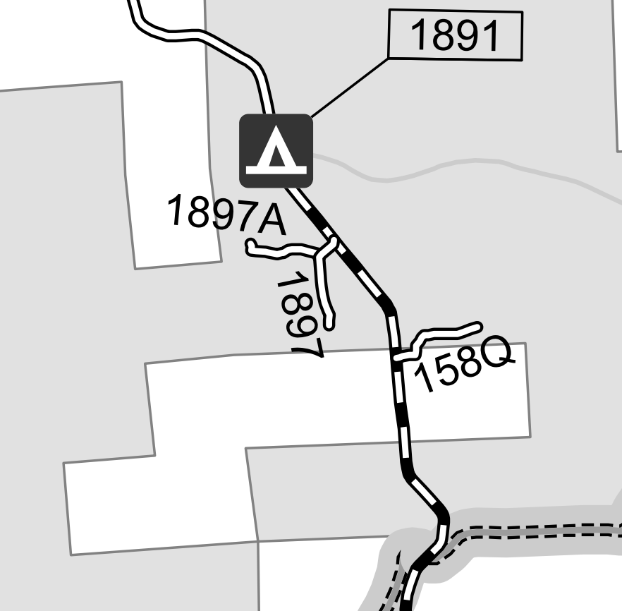
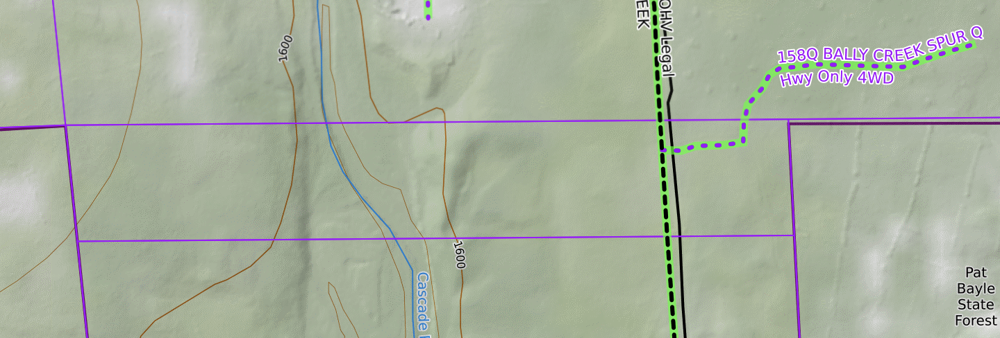
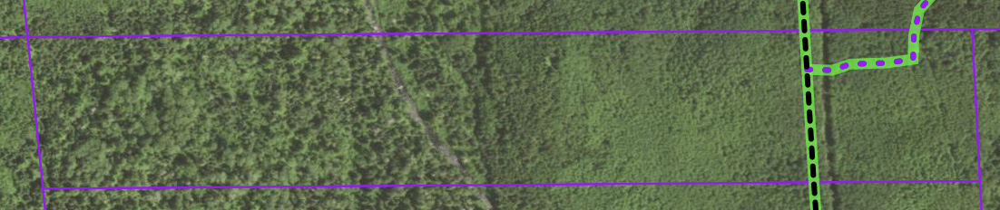

Welcome to our land! Here's some contact info and details.
The normal sign statements apply:
- no trepassing
- no hunting
- no trapping (really no trapping please, we have small kids who like to run all over the place)
That said, please reach out to us with any questions or concerns.
Contact Info:
- Names:
Greg and Chandler Dryke - Phone Numbers:
See Signs - Email:
landusage@dryke.email
FS 158Q
If you're here from the spur road, FS 158Q, here's some additional details!
FS 158Q starts out from FS 158/Bally Creek Road and runs east through our land. At the clearing, it takes a hard left, to the north, and heads into USFS land.
It does not turn right. That is an old road. It may have been a forest service road at some point, but it is no longer.
Please see the motor vehicle use map for more details. Relevant snippet below, and full map link here.

Land Maps
Here's some high level maps of the land. Taken from the county site (link).


Images snipped from https://caltopo.com.